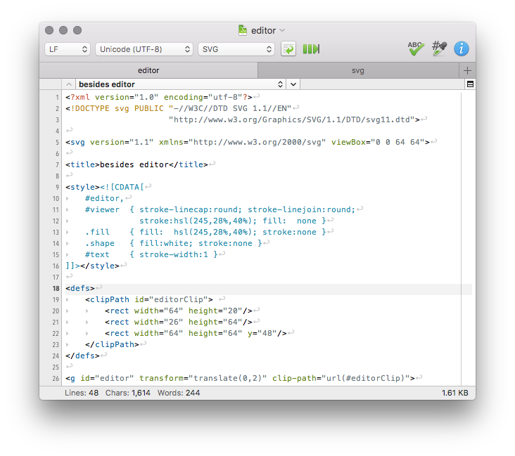
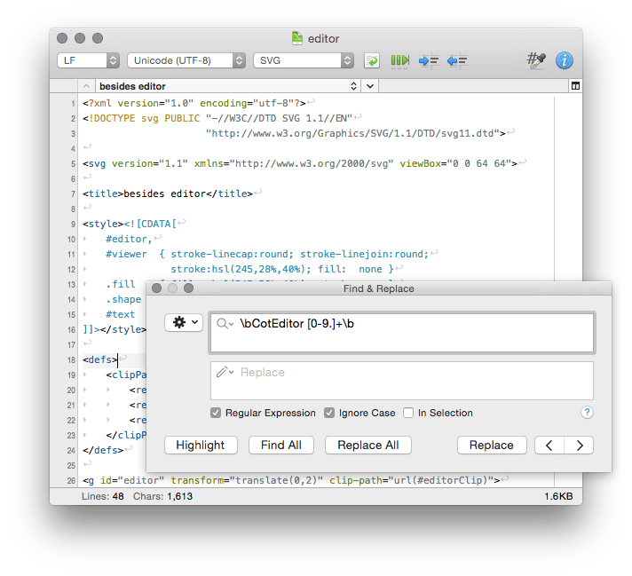
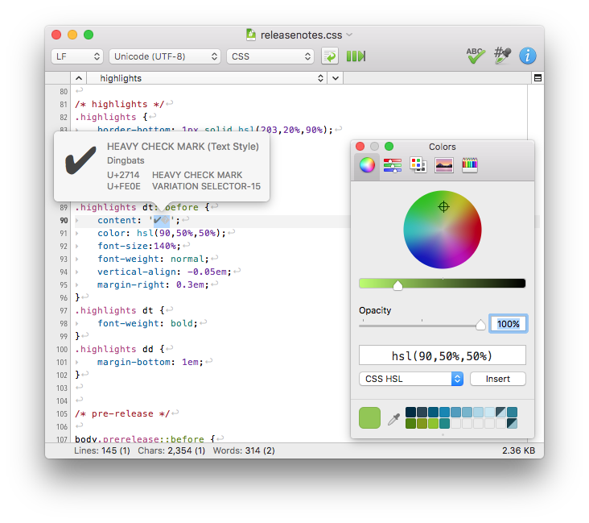
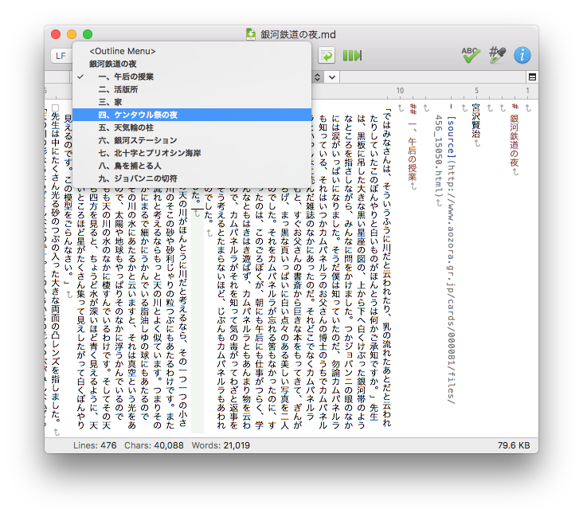

CotEditor 2.0
OS X 専用 プレーンテキストエディタ
無料!
download- バージョン
- 2.0.1
- リリースノート
- 日本語
OS X Lion 以降
- 
- 
- 
- 
![[screenshot: preferences window]](img/screenshots/preferences.png)
CotEditor を選ぶ理由
OS X 専用
CotEditorはOS Xのために作られました。OS Xのアプリケーションがあるべきように振る舞い、見た目も手を抜きません。
日本語フレンドリー
日本生まれのCotEditorは、エンコーディング判定や和英混ざった文書の描画、縦書き表示など、日本語特有の問題もきちんと対応します。
オープンソース
CotEditorはオープンソースプロジェクトです。誰もが開発に参与することがきます。
主な機能
シンタックスハイライト
HTMLやPHP, Python, Ruby, Markdownなど、40のメジャーな言語にあらかじめ対応。自分で新たな定義を作成することもできます。
瞬時に起動
あっという間に立ち上がるので、思い立ったそのときにすぐに書き始めることができます。
パワフルな検索と置換
定評のあるOniGmo正規表現エンジンによる強力な検索／置換パネルを備えています。
クリックで設定
マニアックな知識を必要とする複雑な設定ファイルはありません。テーマやシンタックス定義も含め、設定はすべて一般的な環境設定ウインドウから行えます。
アウトラインメニュー
書類から定められたルールに適合した行を抽出しメニューとして表示します。メニューを選択すれば、該当箇所に移動します。
文字情報表示
選択された文字のUnicode文字情報をポップオーバーで簡単に表示できます。
ビューの分割
エディタを分割し、文書の異なる部分を一度に表示できます。
スクリプト
AppleScriptにPython, Ruby, Perl, PHP, UNIX shell、あなたの好きな言語でマクロを書くことができます (YosemiteならJavaScriptでも!)。
非互換文字の検出
エンコーディングを変換する際には変換できない文字をリストアップします。
フィードバック大歓迎 ♥︎
不具合や要望等ありましたら、どんどん Issue トラッカー に投稿してください。